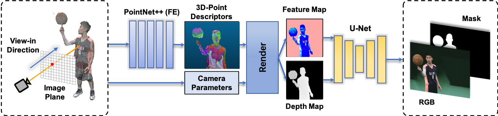

Minye Wu1,3,4 Yuehao Wang1 Qiang Hu1 Jingyi Yu1,2
1 ShanghaiTech University
2 DGene Inc.
3 University of Chinese Academy of Sciences
4 Shanghai Institute of Microsystem and Information Technology
|  |
Our neural human renderer (NHR) produces photorealistic free-view-video (FVV) from multi-view dynamic human captures. NHR trains on multi-view videos and is composed of three modules: feature extraction (FE), projection and rasterization (PR), and rendering (RE). FE adopts PointNet++ to extract features from the reconstructed models over time even under strong topology/reconstruction inconsistencies based on structure and semantics. |
Abstract
We present an end-to-end Neural Human Renderer (NHR) for dynamic human captures under the multi-view setting. NHR adopts PointNet++ for feature extraction (FE) to enable robust 3D correspondence matching on low quality, dynamic 3D reconstructions. To render new views, we map 3D features onto the target camera as a 2D feature map and employ an anti-aliased CNN to handle holes and noises. Newly synthesized views from NHR can be further used to construct visual hulls to handle textureless and/or dark regions such as black clothing. Comprehensive experiments show NHR significantly outperforms the state-ofthe-art neural and image-based rendering techniques, especially on hands, hair, nose, foot, etc.
Overview
Datasets
All experiments are conducted on 3D dynamic human data collected by a multi-camera dome system with up to 80 cameras arranged on a cylinder. All cameras are synchronized and capture at 25 frames per second. In this paper, we use 5 sets of datasets where the performers are in different clothing and perform different actions. [ More details]
Results
Video below shows our results on the 5 datasets.
Citation
@inproceedings{wu2020multi,
title={Multi-View Neural Human Rendering},
author={Wu, Minye and Wang, Yuehao and Hu, Qiang and Yu, Jingyi},
booktitle={Proceedings of the IEEE/CVF Conference on Computer Vision and Pattern Recognition},
pages={1682--1691},
year={2020}
}
Downloads
|
|
" Multi-view Neural Human Rendering " Minye Wu, Yuehao Wang, Qiang Hu, Jingyi Yu. IEEE Conference on Computer Vision and Pattern Recognition (CVPR), 2020 |
Last update: Sep. 26, 2020